|
M I G R A I N E A T T A C K ( S )
I've prepared some exercises and activities for you to try on your own. Some of them come with notes and suggested answers. You'll need to get your own analgesic, though. And ... despite the first four letters of the word, please be advised that the medicine is typically consumed via the mouth.
Corpus-based project
Conduct a small-scale research project on a specific topic within systemic-functional grammar. This may cover any area within the framework:
The research should be text-based. For a small-scale research like this one, the ideal corpus should be a collection of texts about 3,000 words long (ranging from, say, three texts of about 1,000 words each to eight short texts of about 400 words each). Do note that this is merely a guide; variation is permitted. Please also bear the following in mind:
- To keep your research focused, your corpus should contain texts that belong to the same genre or are at least similar in some clear way.
- You should state whether your research is a discovery study (to find out some new features in a text), a comparative study, or a critique of any topic within the framework. Whether you are doing a discovery study, a contrastive study, or a critique, you must show how your analysis allows the reader to better understand the way language is used.
If you don't already know it, the following is the structure of a typical research report:
- Introduction—this outlines the focus and justification of your study. It informs the reader what you did and the significance of your study.
- Review—use this section to give a background review of the area of your research, highlighting particularly the weaknesses of the framework, if any.
You should also make mention of related studies here. Halliday's framework in the area of text analysis is very well known. You can use Google Scholar to search for scholarly articles in your area of research.
- Corpus—describe your corpus in this section; mention explicitly the type of corpus (e.g., blogs, print advertisements), size (e.g., how many texts, roughly how many words), and how the corpus was compiled (e.g., from newspapers, children's books).
- Findings & discussion—show evidence that you understand the key concept(s) that you selected for the research. Include relevant examples from your corpus to support all points made in the report. The examples will, of course, need to be explained and analysed fully. Ideally, the corpus should be attached as an appendix at the end of the report.
- Conclusion—wrap up your discussion by summarizing and reiterating the main points. You might also want to suggest areas for further research.
- References—please follow a consistent style (e.g., APA, MLA).
- Appendix—your corpus goes here. The appendix may also contain any other documents that you feel are needed.
Additional sections can, of course, be added if required.
Beam me up, Scottie!
Text analysis
Migraine 1
Analyse the text below for clause complexing. Comment on whether the clause-complex analysis is useful in bringing out the meaning of the text. You may also raise here any difficulties you encountered in the analysis and how you resolved them. The write-up, excluding the technical analysis, should not be more than two pages long.
Text—Always, Mrs Ramsay felt, one helped oneself out of solitude reluctantly by laying hold of some little odd and end, some sound, some sight. She listened, but it was all very still; cricket was over; the children were in their baths; there was only the sound of the sea. She stopped knitting; she held the long reddish-brown stocking dangling in her hands in a moment. She saw the light again. With some irony in her interrogation, for when one woke at all, one's relations changed, she looked at the steady light, the pitiless, the remorseless, which was so much her, yet so little her, which had her at its beck and call (she woke in the night and saw it bent across their bed, stroking the floor), but for all that she thought, watching it with fascination, hypnotized, as if it were stroking with its silver fingers some sealed vessel in her brain whose bursting would flood her with delight, she had known happiness, exquisite happiness, intense happiness, and it silvered the rough waves a little more brightly, as daylight faded, and the blue went out of the sea and it rolled in waves of pure lemon which curved and swelled and broke upon the beach and the ecstacy burst in her eyes and waves of pure delight raced over the floor of her mind and she felt, It is enough! It is enough! (Virginia Woolf, "To the Lighthouse")
Please use the following conventions in your analysis:
| |
||| ... ||| |
|
Clause complex |
| |
// ... // |
|
Ranking clause |
| |
« ... » |
|
Inserted ranking clause |
| |
[[ ... ]] |
|
Downranked clause |
| |
1, 2, 3, ... |
|
Parataxis |
| |
α, β, γ, ... |
|
Hypotaxis |
| |
+ |
|
Extension |
| |
x |
|
Enhancement |
| |
= |
|
Elaboration |
| |
" |
|
Locution |
| |
' |
|
Idea |
Migraine 1 suggested answers | Beam me up, Scottie!
Migraine 2
Divide up the following text into ranking clauses, and analyse each ranking clause for transitivity. (You do not need to analyse the internal structure of downranked clauses.)
Use the conventions listed in Migraine 1 above.
Text—Down below there was only a vast white undulating sea of cloud. Above there was the sun, and the sun was white like the clouds, because it is never yellow when one looks at it from high in the air.
He was still flying the Spitfire. His right hand was on the stick, and he was working the rudder bar with his left leg alone. It was quite easy. The machine was flying well, and he knew what he was doing.
Everything is fine, he thought. I'm all right. I know my way home. I'll be there in half an hour. When I land I shall taxi in and switch off my engine and I shall say, help me, will you. My voice shall sound ordinary and natural and none of them will take any notice. Then I shall say, someone help me in here. I can't do it alone because I've lost one of my legs. They'll laugh and think that I'm joking, and I shall say, all right, come and have a look, you unbelieving idiots. Then Yorky will climb onto the wing and look inside. He'll probably be sick because of all the blood and the mess. I shall laugh and say, for God's sake, help me.
He glanced at his right leg again. There was not much of it left. The cannon shell had taken him on the thigh, just above the knee, and now there was nothing but a great mess and a lot of blood. But there was no pain. When he looked at it, he felt he saw something that did not belong to him. It was just a mess which happened to be there in the cockpit; something strange and unusual and rather interesting. It was like finding a dead cat on the sofa. (Roald Dahl, "Beware of the Dog", amended)
Migraine 2 suggested answers | Beam me up, Scottie!
Error analysis
Explain and correct the error(s) in analysis in each of the following questions:
Question 1 |
Suggested answer
// Alvin [[ who is a lecturer at NTU ]] is responsible for my migraine. //
"Alvin" is a proper noun. Relative clauses that come after proper nouns are non-restrictive. Hence:
// Alvin, « who is a lecturer at NTU, » is responsible for my migraine. //
Question 2 |
Suggested answer
// He is in the process of // setting the exam questions. //
The segment "setting the exam questions" is part of the PP, which is in turn the postmodifier of "process". This means that the segment is much smaller than a full clause; it is a downranked clause. Hence:
// He is in the process of [[ setting the exam questions. ]] //
Question 3 |
Suggested answer
// He tried // to help Alvin. //
Here "tried to help" is a complex VG—both occur within the same time reference, i.e., one cannot try yesterday to help someone tomorrow, etc. Hence:
// He tried to help Alvin. //
Question 4 |
Suggested answer
// It doesn't matter // what you do. //
This is an extraposed-subject construction. This means that the real subject has been moved to the back. There is therefore only one ranking clause here, containing one downranked clause serving as the delayed subject:
// It doesn't matter [[ what you do. ]] //
= What you do doesn't matter.
Question 5 |
Suggested answer
// Mark Antony regretted // that Caesar was dead. //
This is one of those problematic psychological verbs. Fortunately for us, we have the following diagnostics to help us make a decision:
That Caesar was dead was regretted by Mark Antony.
Mark Antony regretted it.
Mark Antony regretted the fact that Caesar was dead.
Hence:
// Mark Antony regretted [[ that Caesar was dead. ]] //
Question 6 |
Suggested answer

As there is only one ranking clause here, there should therefore be only one F element. Further, "switched on" is the non-finite part of the VG. Hence:
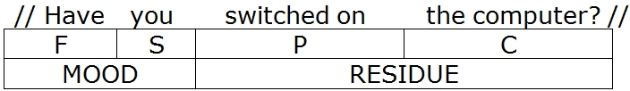
Question 7 |
Suggested answer
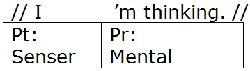
This is not a mental process for two reasons. First, mental processes resist the progressive, but the progressive is used here in an unmarked way. Second, we can use the "do" probe for this clause (which would be prohibited for a true mental process)—"What are you doing?" ~ I'm thinking". These diagnostics therefore tell us that the verb is used here as a behavioural process, not a mental process.
Question 8 |
Suggested answer

The VG "to help" is non-finite, and therefore has no F element. Also, "the boy" is C, not S. It is usual for non-finite clauses not to contain the grammatical subject. Hence:
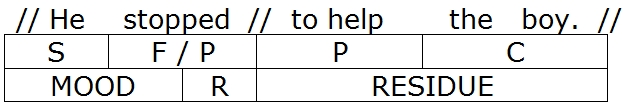
Question 9 |
Suggested answer
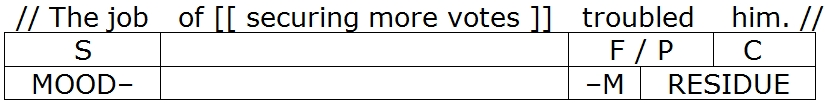
The subject has been wrongly analysed. The subject is "The job of securing more votes". In other words, the downranked clause is part of the grammatical subject. Hence:
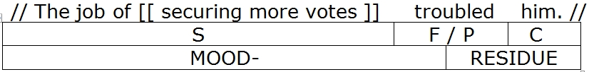
Question 10 |
Suggested answer
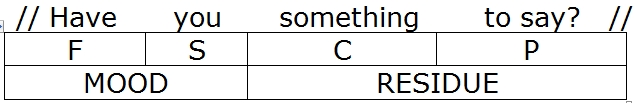
The VG "to say" belongs to "something". You could try querying this—"What's that, Alvin? You've got something to say, eh?" This means that "to say" is downranked. Hence:
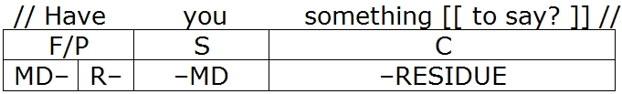
Question 11 |
Suggested answer
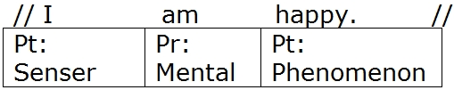
The VG here does not signal a mental process. It is actually a relational process, relating "I" with the feeling of happiness. Such a VG can relate "I" with a number of other things as well, such as "I am skinny" (where the mental-process interpretation completely disappears). Hence:
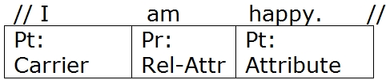
Question 12 |
Suggested answer
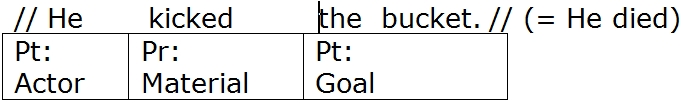
As indicated, this clause is to be interpreted idiomatically to mean "He died", i.e., "kicked the bucket" acts as a single unit to mean "die". The error in the analysis is that it suggests that "the bucket" can be separated from the idiom chunk. But "The bucket was kicked by him" does not carry the meaning of "He died". Hence:
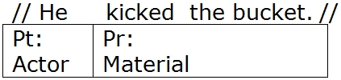
Of course, if the same clause is interpreted literally, then there is absolutely nothing wrong with the original analysis.
Question 13 |
Suggested answer
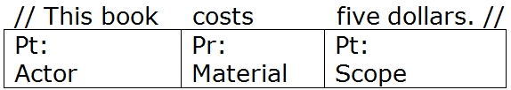
This is clearly not a material process, because the "do" and "what happened" probes don't work. The progressive form of the VG also does not quite work. Rather, the clause captures something that is non-dynamic, and can be reworded as "This book is five dollars". Hence:
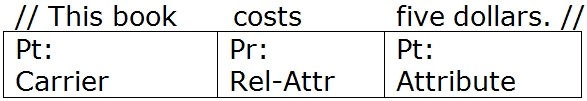
Question 14 |
Suggested answer
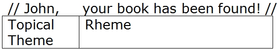
"John" is a vocative, and is therefore an interpersonal theme. The topical theme is "your book". Hence:
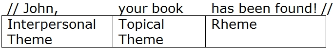
Question 15 |
Suggested answer
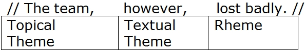
Once the topical theme is located, everything that follows it is rheme. Hence:
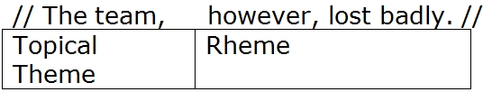
Visual discourse
Preamble
Here, we extend Halliday's framework to images. But you'll have to do a bit of reading on your own before trying this out. The following are mandatory:
- Young, Lynne & Fitzgerald, Brigid. 2006. The Power of Language: How Discourse Influences Society. London: Equinox. (Chapter 6)
- Kress, Gunther & van Leeuwen, Theo. 2006. Reading Images: The Grammar of Visual Design. 2nd ed. London: Routledge.
And here's something else you might find useful. It's an abridged version of a course handout from a looo...oong time ago. If you find it helpful, that's great; if not, just chuck it aside.
Migraine-inducing task
Select at least two images and analyse them for all of the following:
- Ideational meaning
- Interpersonal meaning
- Textual meaning
The images can be any of the following:
- Print advertisements, including any language used (which should be analysed)
- News images, including their accompanying captions (which should be analysed)
- Paintings and other art pieces
Ideally, the analysis should be no more than 2,000 words in length. You should present a balanced and coherent discussion, and use examples to support your points where appropriate. You should assume that your reader is intelligent but ignorant.
Beam me up, Scottie!
Mini exams
Exam 1 (Time Limit: One hour) |
Suggested answers
Exam 2 (Time Limit: One hour) |
Suggested answers
Exam 3 (Time Limit: One hour) |
Suggested answers
Exam 4 (Time Limit: 2½ hours) |
Suggested answers
Exam 5 (Time Limit: 2½ hours) |
Suggested answers
Beam me up, Scottie!
|
Page-internal links
|